# load packages
library(dplyr)
library(tidyr)
library(mirt)
# load data
load("C:/Users/martinln/Documents/IRT_tutorials_alt/Example_data_irt/ECo scale Quoß/envatt_reduced.Rda")A Practical Introduction to Item Response Theory
R-Tutorials in Psychometrics
At a Glance
IRT Intro & 1PL (Rasch)
Motivation of IRT and difference to classical test theory
Before we dive deeper into item response theory (IRT), it’s worth taking a step back and considering what the starting point is and why it makes sense to examine it from an IRT perspective.
In the social sciences, we often face the problem that what we want to measure (e.g., attitudes, personality traits, etc.) cannot be directly observed or measured. Therefore, we attempt to operationalize these abstract concepts using tools such as questionnaires. This leads to a distinction between two levels. On the one hand, we have the latent level. This is the level that cannot be directly observed, where the constructs we are interested in are located. On the other hand, there is the manifest level. This is the observable level where our operationalizations are located—for example, the responses people have given on a questionnaire. It is important to note that these two levels are not equivalent and that there is a gap between them. This is a problem because we are usually interested in latent person and item characteristics, but we only have data with responses at the manifest level. Therefore, we need something that describes how the observed manifest level (e.g., item responses) is related to the unobservable latent construct that we actually want to measure. We call this “something” that describes these relationships a statistical or psychometric model.
Put simply, a statistical model attempts to predict the observed data based on latent variables. For this, we can ask our selfs: “What variables influence the responses to an item?”. Intuitively two influences may come to mind:
The characteristics of the person answering the item (this usually refers to the latent trait we want to measure)
The properties of the item being answered
That seems reasonable. For example, one would expect that the more environmental concern a person has (a latent trait of the person), the more likely they are to agree with an item that advocates for stronger climate protection measures. On the other hand, the characteristics of the item also influence how respondents answer it. For example, how clearly the item is worded, or how difficult it is to agree with the item.
IRT combines these two approaches by taking into account the influence of both persons (latent constructs) and items. This represents a fundamental difference from classical test theory (CTT) (Wilson 2023, 139) and is a major advantage of IRT over CTT. This is evident in several ways. First, IRT always models a person’s response to a specific item. CTT, by contrast, models the total score and thus completely ignores the characteristics of individual items. In IRT, there are model parameters that refer to the person and are constant across all items, but there are also parameters that are item-specific. As a result, IRT explicitly addresses the various influencing factors (person + item)—unlike CTT—and represents a multilevel structure, since responses to different items from the same person can be grouped together, meaning that item responses are nested within persons. Therefore, IRT models can also be understood as generalized linear mixed models. So let’s take a closer look at that next
Good references: Wilson (2023)
Idea of the wright map
make the distinction between the manifest and latent level
we need something to relate the observed/manifest variables with the latent construct we are interested in
This something is a statistical or psychometric model
In summary: We have observed people’s responses to our items (manifest level). This response data is mostly categorical or dichotomous, due to the use of Likert scales. On the other hand, we are interested in individuals’ scores on constructs/traits that are not directly observable (latent level) and would also like to account for the influence of the items. To address this situation, we therefore need a model that can predict the observed responses while using the latent construct and the properties of the items for prediction (Wright map).
IRT from a regression perspective (illustrated for the simplest case: 1PL/Rasch -> dichotomous items) - written by Piotr
Intuitively we can think of IRT as a logistic (or multinomial in the case of polytomous items) regression
- We want to predict a dichotomous dependent variable (the item responses) based on the characteristics of the persons and on the characteristics of the items
IRT as Generalized linear mixed models
More precisely IRT models can be understood as Generalized linear mixed models
GLMM components
Random component/conditional distribution:
- We want to predict, if a person answers an Item with 1 or 0. So the AV follows a Bernoulli distribution, where \pi_{pi} gives the probability, that a 1 is drawn from that distribution
Linear component:
Contains for every person and item pair a linear combination of predictors to predict the item response of this person
We assume that the response of a person on an item is influenced by the characteristics of the person (trait) and characteristics of the items
Therefore we have one person specific predictor (random effects) and one predictor for every item (fixed effects)
Linking component:
Problem: linear component can give values from -\infty to \infty but we want to predict a probability which can only takes values from [0;1]
Solution: We need a function which maps the predictions of the linear component on the interval from [0:1] -> logit-function
IRT is a family of models that specify the relationship between the latent trait \theta (“theta”) and a link-transformation of probability of y_{is} = 1 Hoffman (2024)
IRT as CFA (see Lesa Hoffman)
CFAs are also related to linear regressions, because they have basicly the same form only the parameters are named differently:
lineare Regression: y_{is} = \beta_{0i} + \beta_{1i}x_s + e_{is}
CFA: y_{is} = \mu_i + \lambda_iF_s + e_{is}
We learned that IRT models are Generalized linear mixed models, which can deal with categorical/ordinal data, therefore we can also think about IRT models as CFA models for categorical responses
After this we have established the formula for the 1PL/Rasch model (Note item difficulty instead of easiness to get \theta_p - \beta_i)
A working example: Environmental concern
To illustrate the usefulness of IRT, we will apply what we’ve learned to a real-world example throughout this tutorial. To do so, we’ll use data from the paper by Gomm and Quoß (2026), which developed the New environmental concern scale (ECo scale) for assessing environmental concerns using IRT.
The data from this paper has been made publicly available, so you can download it yourself and follow along with the code examples.
The ECo scale consists of the following nine items:
Instruction: What do you think about the following statements and questions?
| Item | Item text |
|---|---|
| 1 | I am worried when thinking about the environmental conditions in which our children and grandchildren are likely to live. |
| 2 | If we continue in the same way, we are heading towards an environmental disaster. |
| 3 | We worry too much about the future of the environment and not enough about prices and jobs today. |
| 4 | At present, the majority of the population in our country is still not acting in a very environmentally conscious way. |
| 5 | In my opinion, environmentalists strongly overstate the significance of the environmental problem. |
| 6 | Environmental protection measures should be enforced even if jobs are lost. |
| 7 | How willing are you to pay much higher prices to protect the environment? |
| 8 | How willing are you to pay much higher taxes to protect the environment? |
| 9 | How willing would you be to accept cuts in your standard of living in order to protect the environment? |
In the original scale, all items are answered on a five-point Likert scale (Response scale (statements): Does not apply at all (1) to Fully applies (5). Response scale (questions): Very unwilling (1) to Very willing (5)). Item 3 and Item 5 are reverse coded.
Please note that for this tutorial, the data has been dichotomized. This means that responses from participants who somewhat agreed with an item (responses > 3) were coded as 1. Responses from participants who somewhat disagreed with an item (responses < 3) were coded as 0. The responses of participants who answered an item with a 3 were randomly coded as either a 1 or a 0 with a 50% probability. This dichotomization is necessary because the models covered in this tutorial only work with dichotomous response formats. However, in a future tutorial, we will also cover IRT models for polytomous response formats.
So let’s prepare our data:
First we have to load some packages and the dataset.
Now let’s clean our data and bring it in an effective form to work with it.
#### clean up data
1dat_quoß <- w7
rm(w7)
2dat_eco <- dat_quoß %>%
select(w7_q10x1, w7_q10x2, issp6, # affective
w7_q10x5, w7_q10x6, w7_q10x9, # cognitive
issp2, issp3, issp4 # conative
3 ) %>%
drop_na()
4names(dat_eco) <- c("Eco_aff_1", "Eco_aff_2", "Eco_aff_3",
"Eco_cog_4", "Eco_cog_5", "Eco_cog_6",
"Eco_con_7", "Eco_con_8", "Eco_con_9")
# Item 3 and 5 are reverse coded and have to be inverted
5dat_eco <- dat_eco %>%
mutate(Eco_aff_3_r = 6 - Eco_aff_3,
Eco_cog_5_r = 6 - Eco_cog_5)
# uncomment to check if recoding was sucessfull:
# View(dat_eco[, c("Eco_cog_5", "Eco_cog_5_r")]) - 1
-
First we save the loaded dataset in a new object named “dat_quoß”, which is more meaningful tha “w7”. We can delete the old “w7” object from the environment with
rm() - 2
-
Next we can reduce the dataset to the variables we actually need (the items of the ECo scale) and save the results in the new object “dat_eco”. For this we use the
dplyrpackage (Wickham et al. 2026) from the tidyverse, which is aa very helpful package to handle data. With theselect()function we select all variables/columns from our dataset, that we want to keep. - 3
- Here we drop all rows which contain missing values
- 4
-
In our dataset which only contains the ECo scale items (
dat_eco) we can now also rename our variables/item so that is easier to see which item is which. For this we use the following logic: first three letters specify the scale (ECo scale), the next three letters specify the dimension they measure (see Gomm and Quoß 2026), the number at the end gives the number of the item in the scale. - 5
-
The ECo scale contains two reversed coded items (Item 3 and 5). To recode the two items, we use the
mutate()function from thedplyrpackage to create two ne variables (columns). On the left side of=we name our new variable. On the right side of=we define how the new variable is build. Since the Likert-Scale of the ECo scale has 5 points, we can invert the responses by subtracting the person’s answer from 6. For example, if a person selected the highest response option on the Likert scale (5), then that person should select the lowest response option (1) on the recoded item. When we apply our “formula,” we see that this is exactly what happens: 6 - 5 = 1
As discribed above we have to dichotomize the responses:
# build data set with dichotomouse responses
dat_eco_dicho <- dat_eco %>%
1 mutate(across(
.cols = everything(),
2 .fns = function(x){
# ifelse(x < 3, 0, ifelse(x > 3, 1, rbinom(1, 1, 0.5)))
out <- ifelse(x < 3, 0, ifelse(x > 3, 1, NA))
idx <- which(x == 3)
out[idx] <- rbinom(length(idx), 1, 0.5)
out
},
3 .names = "{.col}_dicho"
))- 1
-
This code creates new variables as we can see by the
mutate()function, by apply a self defined function on every variable/column in our dataset. - 2
-
Here we specify the function which should be applied to every collumn on the dataset. The function takes the values of a column (
x) and tests for each value in the column if the value is bellow 3. If this is the case, than the value is recoded in a 0. If the value is above 3 than the value gets recoded in a 1. If the value is exactly 3, that the value is recoded in a missing value. In the next step we get the positions of every value in our column which is exactly 3. Next we set ne values for all values which are exactly 3 by sampling from a binomial distribution. By sampling from a binomial distribution withprob = 0.5we get a 1 with a probability of 50%. - 3
- Here we define how the ne created variables should be named. For this, the current column name is used (“{.col}”) and extended by the ending “_dich”
The Rasch Model (1PL)
Following this conceptual introduction, let’s take a closer look at the first IRT model.
The Rasch model is a statistical model that links the latent level to the manifest level by predicting the probability that a person will choose response 1 for a given item. The Rasch model always assumes dichotomous response formats, in which the responses are typically coded as 0 and 1. Generally speaking, 1 represents an success and 0 a failure. In our example with the ECo-Scale, a success can be interpreted as agreement with the item and a failure as disagreement with the item. In achievement testing, however, 1 could also mean “Correct” and 0 could mean “Incorrect.”
Formula
The Rasch model is described by the following formula:
P(Y_{ni} = 1) = \frac{\exp(\theta_n - \beta_i)}{1 + \exp(\theta_n - \beta_i)} \tag{1}
Let’s take a look at the individual components to better understand the formula:
On the left side of the equation is the probability that a person n will answer item i with a 1 (P(Y_{ni} = 1)). Thus, Y_{ni} denotes the response of person n to item i and can take the values 0 or 1. In the framework of regression, this probability P(Y_{ni} = 1) is therefore our dependent variable, which we want to predict.
To make this prediction, we need predictors. The Rasch model assumes two predictors or parameters:
the persons ability/trait (\theta_n)
the difficulty of the item (\beta_i)
The rest is the logistic function f(x) = \frac{e^x}{1 + e^x}, which we use as a link function g() to predict a probability (see IRT as logistic regression). We then simply set x = \theta_n - \beta_i.
1PL
Before we take a closer look at what the model parameters actually mean, it is worth noting that the Rasch model is sometimes referred to as the 1PL model. The 1PL stands for One-Parameter Logistic Model. The “One” refers to the number of item-specific parameters. As we can see in the equation, there is only one parameter that has an index i and can therefore vary for each item: the item difficulty \beta_i. Later on, however, we’ll also learn about IRT models with more item-specific parameters.
Strictly speaking, however, the Rasch model is a special case of a 1PL model. This is because the 1PL model is defined as follows:
P(Y_{ni} = 1) = \frac{\exp(\alpha(\theta_n - \beta_i))}{1 + \exp(\alpha(\theta_n - \beta_i))} \tag{2}
As we can see, this formula looks almost identical to the Rasch model, except that a new parameter \alpha, has been added. This is the discrimination parameter, which we will examine in more detail later. What we can see now, however, is that we only refer to a Rasch model when \alpha = 1.
Even though this may seem like a minor difference—and is mathematically equivalent—there are different philosophical perspectives underlying it (De Ayala 2022, 20). Compared to the Rasch model, the 1PL model is designed to fit the data as closely as possible. This is because the 1PL model is more flexible than the Rasch model; the \alpha parameter does not have to be 1, so the model can “try out” different \alpha values to determine which \alpha yields the best fit to the data. The Rasch model does not allow for this kind of flexibility, since alpha must equal 1 in this model. However, this restriction ensures a consistent scaling that allows for comparability across different Rasch models.
AV = probability of person p two answer item i with 1 (P(Y_{pi} = 1))
Two Parameters/predictors are influencing this probability
the persons ability/trait (\theta_p)
the difficulty of the item (\beta_i)
Therefore we can say that probability is depending on the values of the predictors P(Y_{pi} = 1|\theta_p, \beta_i) ( Wilson (2023) p. 136)
since each item is thus characterized by only one parameter (\beta_i) this model is also called the 1PL
we take later a look at models with more than one itemspecific parameter
Difference Rasch vs. 1PL: Rasch is a special case of 1PL where \alpha = 1
Other 1PL model can have \alpha \neq 1. NOTE: In 1PL models \alpha is NOT item specific to ensure parallel ICCs
Is this to technical for a beginner tutorial? Especially because the discrimination parameter is introduced in the 2PL part
Interpretation of model parameters
Let’s take a closer look at the two model parameters.
\theta refers to the person parameter - that is, the latent construct we want to measure. Since the latent construct represents a continuum, the \theta parameter requires the index n, because each person is located at a different point on the continuum. In our example, \theta would be “environmental concerns,” and \theta_n would be the level of environmental concerns of person n.
\beta is the item difficulty. The \beta parameter has the index i because items vary in difficulty. The term “difficulty” stems from the historical background of the IRT, which was developed primarily for achievement and ability applications. In the context of personality assessment or the measurement of attitudes, difficulty can be understood as how easy it is for individuals to agree with or disagree with an item. A more neutral term, which is therefore also frequently used to refer to item difficulty, is “item location” (Wilson 2023; De Ayala 2022).
The term “location” highlights an important property of IRT models. Specifically, \theta and \beta lie on the same continuum or scale.
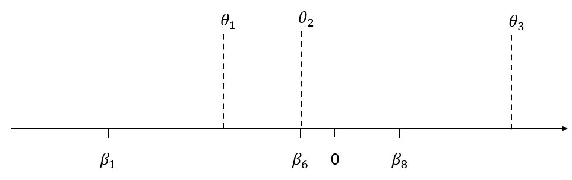
In our example, the continuum represents environmental concerns. We can now compare individuals with one another and see, for example, that Person 1 (\theta_1) has the lowest level of environmental concerns compared to the other two individuals. Conversely, we can also compare the items with one another. For example, Item 1 (\beta_1) is a “easy” item, since it requires only a low level of environmental concerns to agree with it, while Item 8 is a “difficult” item, since one must have a fairly high level of environmental concerns to agree with it. This also makes intuitive sense when we look at what Item 1 and Item 8 of the ECo scale ask. Item 1 asks: “I am worried when thinking about the environmental conditions in which our children and grandchildren are likely to live.” That’s a statement most people can probably agree with. In contrast, Item 8 asks “Are you willing to pay much higher taxes to protect the environment?” Something that probably far fewer people are willing to do. Therefore Item 8 is more “difficult” to agree with and has a higher \beta than item 1.
However, since \theta and \beta are now on the same continuum, we can also compare \theta with \beta. For example, we might expect Person 1 (\theta_1) to agree with Item 1 because Person 1 has higher environmental concerns than the location associated with Item 1. At the same time, one would expect Person 1 to be more likely to disagree with Item 8, since Person 1 has much lower environmental concerns than the point at which Item 8 is located.
Using the formula from the Rasch model, we can actually calculate the probability of the responses precisely, rather than just estimating it visually: Let’s say \beta = -1.343 and \theta_1 = -0.5, than we can just plug in the values in the Rasch formula to calculate the probability that Person n = 1 answers item i = 1 with 1 (= agree):
P(Y_{11} = 1) = \frac{\exp(\theta_1 - \beta_1)}{1 + \exp(\theta_1 - \beta_1)} = \frac{\exp(-0.5- (-1.343))}{1 + \exp(-0.5 - (-1.343))} = 0.70
This result indicates that the Rasch model estimates the probability that Person 1 will answer Item 1 with a 1 to be 70%.
We can do this again with Item 8. Let’s assume that \beta_8 = 0.347. Than we can calculate the probability that Person n = 1 answers item i = 8 with 1 (= agree):
P(Y_{18} = 1) = \frac{\exp(\theta_1 - \beta_8)}{1 + \exp(\theta_1 - \beta_8)} = \frac{\exp(-0.5- 0.347)}{1 + \exp(-0.5 - 0.347)} = 0.30
This result indicates that the Rasch model estimates the probability that Person 1 will answer Item 8 with a 1 to be 30%.
Let’s work through one last example. Let’s assume \beta_6 = -0.5 for Item 6. Than we can calculate the probability that Person n = 1 answers item i = 6 with 1 (= agree):
P(Y_{16} = 1) = \frac{\exp(\theta_1 - \beta_6)}{1 + \exp(\theta_1 - \beta_6)} = \frac{\exp(-0.5- (-0.5))}{1 + \exp(-0.5 - (-0.5))} = 0.50
As we can see, the probability that Person 1 will solve Item 6 is exactly 50%. Here we can observe something interesting: namely, that if a person’s ability matches the item’s difficulty (i.e., \beta_i = \theta_n), then the probability of solving it is 50%. In fact this is the definition of item difficulty: The item difficulty is the point on the theta continuum at which the probability that the person will solve the item is exactly the same as the probability that the person will not solve it.
This shows us that, ultimately, only the discrepancy between \theta_n and \beta_i is relevant to the probability that a person will agree with an item. The rest of the formula serves only to restrict the result to a range between 0 and 1, so that we can interpret the results as probabilities (link-function).
This means, the higher the \theta_n (e.g. the higher the environmental concerns of a person are) compared to the \beta_i (e.g. amount of environmental concerns required to have a probability to agree with the item of 50%), the higher is the probability that a person will agree with an item.
Conversely, the higher \beta_i (e.g., the level of environmental concern required to achieve a 50% probability of agreement) compared to \theta_n (e.g., the greater a person’s environmental concern), the lower the probability that a person will agree with an item.
In other words, the greater the discrepancy between \theta_n and \beta_i, the more the probability that a person will agree with the item deviates from 50%, and the more certain we are of our prediction.
NoteLet’s do it in R
Now that we understand the logic behind the Rasch model, the question arises: How do we actually know the \theta and \beta values for the individuals and items, respectively? Although the exact mathematical background and various estimation procedures are beyond the scope of this tutorial, in simple terms, the parameters of the Rasch model can be estimated based on a dataset containing the respondents’ item responses. This involves using a search algorithm that attempts to determine the \theta and \beta values for each person and each item in such a way that the model can predict the data as accurately as possible. As a practitioner, this is very easy to implement thanks to statistical software. In this tutorial, we’ll use the statistical programming language R and the mirt package (Chalmers 2012) for this purpose.
# install and load the mirt package for IRT analyses
#install.packages("mirt")
library(mirt)Using the mirt() function from the mirt package, we can now fit a Rasch model to our example data from the ECo-Scale. The mirt function expects the following arguments:
- 1
-
data= Here, we pass our dataset, which contains the responses of all participants to the items on our scale. - 2
-
model= This argument affects how the model is estimated. A single number indicates how many latent constructs our measurement instrument measures. Since the ECo Scale measures a single latent trait (environmental concerns), we can leave the default value (= 1) as is. - 3
-
itemtype= As we’ll see later,mirtis capable of fitting a wide variety of IRT models. Usingitemtype, we therefore tellmirtwhich IRT model we want to fit to the data. Since we want to fit a Rasch model, we pass the string “Rasch” to the argument here. - 4
-
SE= If this argument is set toTRUE, standard errors for the model’s parameters will also be included in the output. If we don’t want that, we can simply set the argument toFALSEor omit it.
print(eco_rasch)
Call:
mirt(data = dat_eco_dicho[12:20], model = 1, itemtype = "Rasch",
SE = TRUE)
Full-information item factor analysis with 1 factor(s).
Converged within 1e-04 tolerance after 25 EM iterations.
mirt version: 1.46.1
M-step optimizer: nlminb
EM acceleration: Ramsay
Number of rectangular quadrature: 61
Latent density type: Gaussian
Information matrix estimated with method: Oakes
Second-order test: model is a possible local maximum
Condition number of information matrix = 6.025269
Log-likelihood = -39169.92
Estimated parameters: 10
AIC = 78359.83
BIC = 78429.62; SABIC = 78397.84
G2 (501) = 1981.81, p = 0
RMSEA = 0.019, CFI = NaN, TLI = NaNWhen we use print() to output our mirt object, we first see a summary with general information about our model. The first block contains information about the estimation method that mirt() used to estimate the model. The lower block contains fit criteria regarding the model fit. The exact estimation algorithm is beyond the scope of this tutorial. To put it simply, however, the model parameters are estimated by first substituting random values for the \theta_n and \beta_i and then checking how likely it is to observe the data we have collected. In the next step, new values for \theta_n and \beta_i are substituted, and it is checked whether these values are more likely to produce the data pattern we have collected. This process is repeated many times until the parameter values that most likely fit our observed data are found. Since this process can theoretically take an extremely long time, the algorithm must be given termination rules. There are two options here, which we can also see in the output.
First, there is the tolerance. This specifies how small the change in the probability of the parameters must be, given the data, for the algorithm to terminate. The reasoning behind this is that if, under the new parameters, the data is only, say, 0.0001% more likely than under the parameter values from the previous iteration, then it no longer makes sense to continue optimizing the parameters, since the increase in probability is so small that it is practically irrelevant. We see that the default tolerance of mirt is 0.0001 (1e-04). This makes mirt more lenient than other software, where the tolerance is often set to 0.00001 (1e-05). However, you can also set the algorithm’s tolerance manually by adding the TOL argument to the mirt() function (e.g., mirt(data = dat_eco_dicho[12:20], model = 1, itemtype = “Rasch”, SE = TRUE, TOL = 1e-5)).
Second, you can define a maximum number of iterations after which the algorithm terminates, regardless of whether a unique solution for the parameters has been found or not. By default, mirt allows a maximum of 500 iterations. In the output, we can see that only 25 iterations were needed for our Rasch model. However, more complex models may well require more iterations. Therefore, you can set your own maximum number of iterations using the argument technical = list(NCYCLES = 1000), e.g., mirt(data = dat_eco_dicho[12:20], model = 1, itemtype = “Rasch”, SE = TRUE, TOL = 1e-5, technical = list(NCYCLES = 1000)).
We can also quickly check whether our estimation algorithm has found a solution or put differently whether it was able to successfully estimate the model. To do this, we can test whether the variables converged and secondordertest in our Rasch model have become TRUE.
# is the estimation algorith converged?
eco_rasch@OptimInfo$converged[1] TRUE# has the estimation algorith found plausible Maximum/Minimum
eco_rasch@OptimInfo$secondordertest[1] TRUEAlthough we have estimated a Rasch model with the mirt()function, we initially see only a summary of how the model was estimated and how well it fits the data overall, when we use print to display the model—but we don’t see any \theta or \beta values. This is because mirt provides us with a large amount of information about our model and stores it in the eco_rasch object. We can see this, for example, by clicking in the environment the blue arrow next to eco_rasch or by running str(eco_rasch). When we do this, we see that the eco_rasch object is quite large and nested, and contains far too much information to display all at once. Therefore, we need to specifically retrieve the information we’re interested in from the object.
For example, to access the item parameters, we can use the coef() function. The coef() function expects the following arguments, among others:
- 1
-
An object that contains the estimated model—in our example,
eco_rasch - 2
-
IRTpars= This argument determines whether the item location is specified as item difficulty or item ease. If we set the argument toTRUE, we obtain the \beta values as we have come to know them as item difficulties. If the argument is omitted or set toFALSE, the item ease is output instead. This means that the higher the item ease, the lower the \theta value required for the probability of answering the item with a 1 to be 50%. - 3
-
simplify= If this argument is set toTRUE, the output is simplified and presented in a clearer format. However, if you also want to obtain the confidence intervals for the item parameters, you can setsimplifytoFALSEor omit it.
Let’s take a look at the output of our new coef-object.
item_par_eco_rasch$items
a b g u
Eco_aff_1_dicho 1 -1.697 0 1
Eco_aff_2_dicho 1 -1.532 0 1
Eco_aff_3_dicho 1 -1.261 0 1
Eco_cog_4_dicho 1 -1.094 0 1
Eco_cog_5_dicho 1 -1.079 0 1
Eco_cog_6_dicho 1 -0.049 0 1
Eco_con_7_dicho 1 -0.756 0 1
Eco_con_8_dicho 1 0.417 0 1
Eco_con_9_dicho 1 -1.397 0 1
$means
F1
0
$cov
F1
F1 2.217The output consists of three sections:
$items: Here we find all item-specific model parameters. The items are listed in the rows. As we have learned, the Rasch model has only one item-specific parameter, namely the item difficulty \beta_i. This is shown in columnb. The other columns represent additional item-specific model parameters that also play a role in other IRT models, but which we can ignore in the case of a Rasch model.$means: This contains the latent means of all latent factors assumed by our model. Since we assume only one latent factor (environmental concerns) in our model, the output shows only this latent factor (labeledF1). Here, the latent mean is 0. This means that individuals with a \theta = 0 have an average level of environmental concerns.$cov: Here we find a variance-covariance matrix for our latent factors. However, since we assume only one latent factor in our model, we see only a 1 \times 1 matrix—that is, the covariance of the latent factor with itself—which simply corresponds to the variance within the latent factor.
If we want to extract the individual parameters (\theta_n) from our Rasch model/mirt object (eco_rasch), we can use the fscore() function.
# extract the personspecific parameters from our Rasch model
person_par_eco_rasch <- fscores(eco_rasch)
head(person_par_eco_rasch) F1
[1,] -0.55348791
[2,] -0.09705609
[3,] -0.98445793
[4,] -0.09705609
[5,] -0.55348791
[6,] -2.38317945You only need to run install.packages()only once, if you haven’t already installed the mirt package yet.
Note that we save with <- the results of the mirt function in an object (= eco_rasch). This allows us to save the Rasch model in our environment. It also enables us to retrieve only specific information and parameters from the model and use them in other R commands.
Note that our dataset consists of 7,932 individuals. Therefore, when we use fscore(), we also get 7,932 different \theta_n values (one per individual). To keep the output concise, we use head() to display only the first 6 \theta_n values out of the 7,932 \theta_n values we have stored in person_par_eco_rasch.
Visualizations of the Rasch Model
Item Characteristic Curve
We can also visualize these relationships. To do so, we can conduct a small thought experiment: Imagine we select an item for which we know the item difficulty. Now we calculate the probability that a person will answer with a 1—but no longer for a specific person, rather for every possible \theta_n value. If we then create a plot where the x-axis represents \theta and the y-axis represents the probability that the item will be answered with a 1, we can see for every possible person how high their probability is that they will agree with the item. Such a plot is called an item characteristic curve (ICC) or item response function (IRF).
As an example, the ICC for Item 6 of the ECo scale is shown in the following:
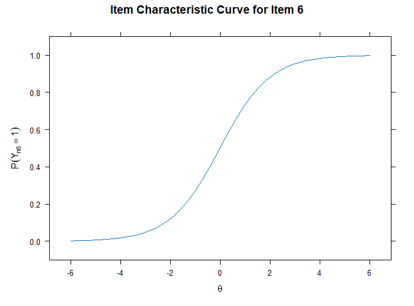
In the case of the Rasch model, we have the distinctive feature that the item difficulty always lies at the inflection point of the ICC. In our example, item 6 has an item difficulty of \beta_6 = -0.018. If we go to the corresponding point on the x-axis in Figure 2 and look at the height at which the blue line intersects the y-axis, we see that at the \theta point of -0.018, the probability of answering the item with 1 is 50%, and visually we can see here that the curve also changes the direction of its slope at this point (= definition of the inflection point), because left of the item difficulty, the slope of the probability increases steadily, and right of the item difficulty, the slope of the probability decreases steadily.
We can now conduct our thought experiment not only for a single item, but also for all items on the scale, so that we can calculate an ICC curve for each item:
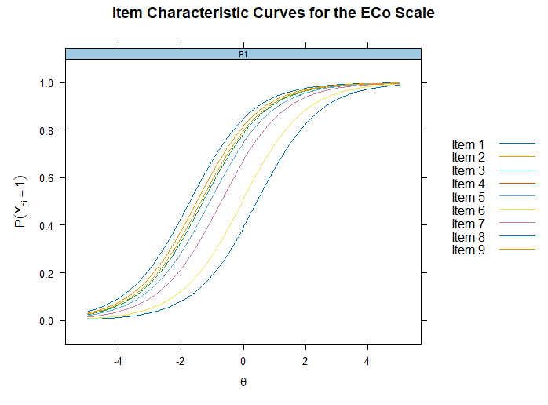
When we consider multiple items or ICCs simultaneously, we see in Figure 3 that the varying item difficulties result in a shift of the ICCs along the x-axis. This makes sense, since a more difficult item lies further to the right on the \theta continuum. Accordingly, the point where the ICCs intersect a 50% probability—or their inflection point—must also lie further to the right. This shifts the entire curve to the right.
It is important to note that, under the Rasch model, the ICCs are all parallel to one another, meaning there is no overlap between the curves. As a result, the probability that an item will be answered with a 1 is always lower for a more difficult item than for an easier item, for all values of \theta. We can see this because the ICCs further to the right (= more difficult items) are always lower than the ICCs to the left (= easier items), regardless of where on the \theta scale the items are compared.
Conversely, however, we can also see that individuals with higher \theta scores are on all items more likely to answer the item with a 1 than individuals with lower \theta scores. We can see this in the ICC plot as well. For example, the y-values of the ICCs at \theta = 2 are higher for each item than at \theta = -2.
NoteLet’s do it in R
To plot the ICC for a single item from our ECo scale, we can use the itemplot() function. This function expects the following arguments, among others:
- 1
-
object: Here, we pass in the IRT model that we estimated using themirt()function (here:eco_rasch. - 2
-
item: Here, we specify which item we want to plot. We can either enter a number or the item name. So instead of 6, we could also specify “Eco_cog_6_dicho” - 3
-
type= Here we can specify what should be plotted. To obtain the ICC, select “trace.”
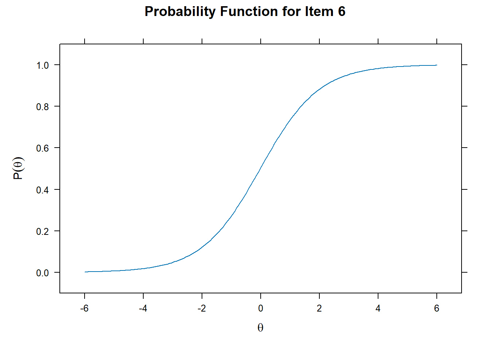
If we want to plot the ICCs for all items at the same time, we can use the plot() function:
- 1
-
object: Here, we pass in the IRT model that we estimated using themirt()function (here:eco_rasch. - 2
-
type= Here we can specify what should be plotted. To obtain the ICC, select “trace.” - 3
-
theta_lim: Here, we can specify the range of \theta values shown in the plot. In other words, we can specify the portion of the x-axis that should be plotted. - 4
-
facet: If we set this argument toFALSE, all ICCs are plotted on a single graph. If we set the argument toTRUEor omit it, we get a grid of plots, with the ICC for each item plotted in each cell.
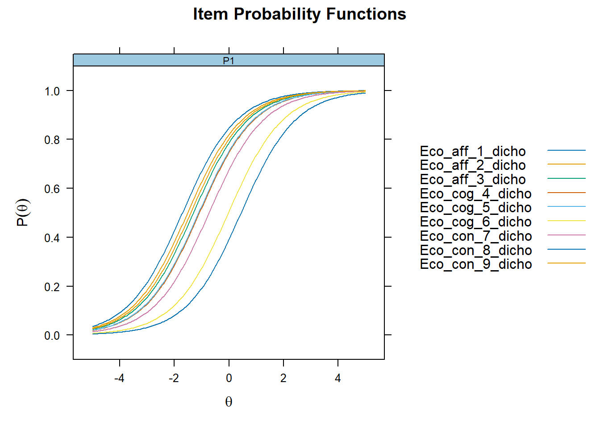
Here’s another example of what happens when you set facet = TRUE:
plot(eco_rasch, type="trace", theta_lim=c(-5,5), facet = TRUE)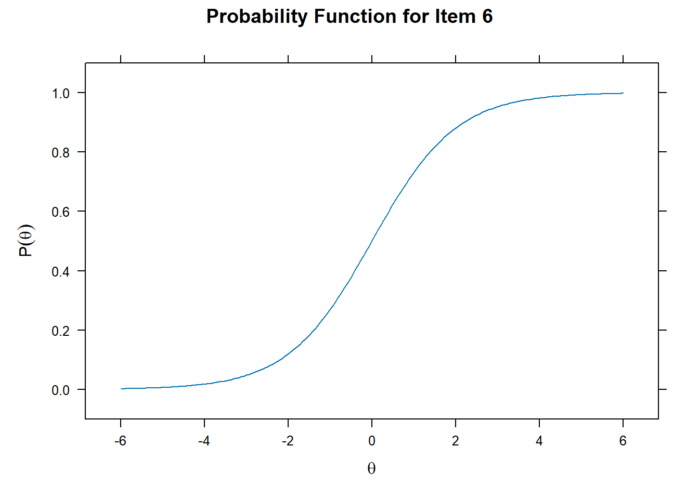
Wright Map
the more items our scale consists of, the more confusing the ICC plots can become (Wilson 2023). Another useful visualization from which we can also learn a lot of information is the so-called Wright Map, also known as the Person Item Map. To do this, we take advantage of the fact that, in the Rasch model, the probability that a person will answer “1” for an item actually depends on only two parameters (\theta and \beta), and we can place both parameters on the same latent scale (Wilson 2023). We’re already familiar with this idea from the section where we looked at the meaning of the model parameters, and in fact, we had already worked there with a kind of Wright map in the form of Figure 1 .
Nevertheless, let’s now take a closer look at the Wright map using a fictional example shown in Figure 4 . The axis on the left side labeled “Logits” represents our latent continuum, on which we can locate our individuals and items. The x-axis represents the different items. Accordingly, the points on the graph represent the item difficulties \beta_i. For example, we can go to the point labeled “Item 3” on the x-axis, read the corresponding y-value for the point \beta_3, and see that this item has a \beta_3 of approximately -1.8. On the left, labeled “Respondents,” we see a histogram that extends along the “Logits” scale. Here we find our individual parameters \theta_n. Since we often have large samples (for example, n = 500 individuals are simulated here), it would be very confusing to plot every single \theta_n value. Therefore, a histogram is provided here. We see that, in our example, this follows a normal distribution, with most individuals in our sample having a \theta value centered around 0. Very large or very small \theta values, on the other hand, are very rare. For further illustration, three individuals with different \theta values were selected from this distribution and marked with colored dashed lines.
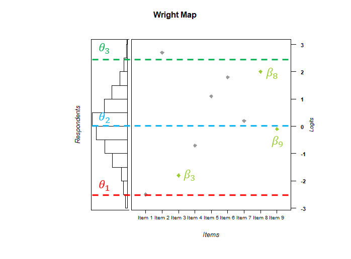
The core idea behind the Wright map is that it allows us to compare items and individuals very effectively and thus assess how well our test fits the sample we are using for measurement. Let’s take Person 1, for example, who has a very low score on the construct (see \theta_1 = -2.5); this could be a person with very low environmental concerns, in the case of the ECo scale. We can see that virtually all items except Item 1 lie significantly above Person 1’s trait score (above the dashed red line). If we now recall that the item difficulty \beta_i corresponds to the \theta score at which the probability of answering the item with a 1 is 50%, we can see here—even without looking at the exact ICC curves—that Person 1’s probability of answering the item with 1 for most items is well below 50%, meaning they will answer most items with a 0.
NoteLet’s do it in R
To create a Wright map in R we are using the WrightMap package (Torres Irribarra and Freund, n.d.).
Before we can create the Map itself we have to prepare the data.
- 1
-
First we have to load the package, so that we can use it in our R session. If you haven’t installed the package yet, you can use this code:
install.packages("WrightMap") - 2
-
Next we save the estimated person parameters (\theta_n) in an object we call “theta”. We should already be familiar with this code from earlier, so it won’t be explained in detail here. New is only the
[,1]at the end of the syntax. Basically, this tells R to just take all rows but only column 1 from thefscores()object, because we are only interested in the values and not the person IDs. - 3
-
Here we save the item difficulties ($\beta_i$) in an object we call “beta”. Again, this code should be familiar. If you recall from above,
coef()gives three section in its output. We are only interested in the itemparameters, therefore, we extract them by adding $items to the code. In the case of the Rasch model we are only interested in the item difficulties, so we can ignore the other item specific parameters. To only extract the \beta_i we add[, "b"](“extract all rows but only thebcolumn”)
Now we can create the plot by using the wrightMap() function.
- 1
- Here we pass in our person locations, or \theta_n
- 2
- Here we pass in our item locations or item difficulties, or \beta_i
- 3
-
This is where the item names are defined. Since the names of our items in the ECo scale data are quite long, and to keep the plot clear, we’ll use new item names here by simply numbering the items. However, you can also easily use the item names from the data by replacing
paste()withrownames(beta) - 4
-
This argument is relevant for more complex IRT models and can be ignored in the case of the Rasch model; therefore, it is set to
FALSEhere. - 5
- Here we can specify the plot’s design. For the different themes available, see the function’s documentation.
- 6
- Here we can give our plot a title.
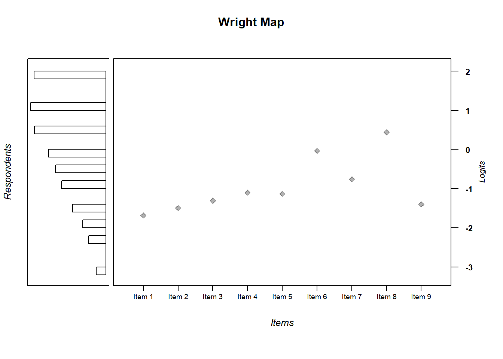
s. (Wilson 2023, 142) -> aber bisschen redundant zu oben?
both on the same scale (s. Wright-map -> p.26 and figure 1.10 in Wilson (2023)
In a regression logic we can also say, that the difference/distance between a person and an item on the continuum can be used as a predictor to predict the probability that a person will solve the item
Assumptions and Properties of the Rasch Model
Unidimensionality
So far, we have always assumed that there is exactly one parameter on the individual’s side that influences the probability that an item will be answered with a 1. We can see this in the formula as well, since there is only one parameter, which has the individual-specific index n. So far, we have always assumed that there is exactly one parameter on the individual’s side that influences the probability that an item will be answered with a 1. We can see this in the formula as well, since there is only one parameter with the person-specific index n. This implies that only the construct we refer to as \theta (in our example, “environmental concerns”) influences the respondents’ answers to the items. This assumption is called unidimensionality assumption.
Local independence
Another assumption, which is also closely related to the assumption of unidimensionality, is local independence, or sometimes also called conditional independence. Local independence assumes, that the responses a person gives to the various items are independent of one another, conditional on the value of \theta_n. This means that the only source of relationships between the item responses of a person can be the person-specific construct \theta_n. This goes back to the assumption of unidimensionality, since we assume that there is only one person-specific construct that influences a person’s responses to the items. We can illustrate this using the ECo scale as an example. We assume that the probability of a person agreeing with items designed to measure environmental concern depends solely on the level of that person’s environmental concern. Accordingly, it makes sense that the responses a person gives to different items on the scale are correlated. For example, a person with high levels of environmental concern will agree with most items, while a person with low levels of environmental concern will disagree with most items. Consequently, a person’s responses are correlated because they are all based on the same level of environmental concern. However, if you account for this source of commonality among a person’s item responses, then that person’s responses to the items should be independent—that is, random.
TipMathematical background
Mathematically, this can be expressed as follows (Lord 1980, 19):
P(Y_{ni} = 1| \theta_n) = P(Y_{ni} = 1|\theta, Y_{nj}, Y_{nk}, ...) \quad (i \neq j, k. ...) \tag{3}
This means that the probability that person n answers item i with a 1, given \theta, is the same as the probability that person n answers item i with a 1, given \theta and given person n’s answers to items j, k, and all other items that are not i. Put simply, this means that the information about what the person said on the other items does not influence the answer to item i.
Another possible way to write this is (Lord 1980, 19):
P(Y_{ni} = 1, Y_{nj} = 1, Y_{nk} = 1| \theta_n) = P(Y_{ni} = 1|\theta_n) \cdot P(Y_{nj} = 1|\theta_n) \cdot P(Y_{nk} = 1|\theta_n) \tag{4}
This expression states that the probability that a person answers all three items i, j, and k with 1, given \theta_n, is equal to the product of the individual probabilities of answering an item with 1
If the assumption of local independence is violated, this means that, in addition to the construct \theta that we wish to measure, there are one or more other sources of systematic variance that influence individuals’ response behavior. These could be, for example, other latent constructs that also affect the response process. For instance, in addition to environmental concerns, the need for cognitive closure might also influence item responses. However, since we assume only a unidimensional structure, this additional construct is not represented in our model (Please note, that there are also multidimensional IRT models, however, this topic is beyond the scope of this tutorial). It is however important to note that local stochastic independence should not be considered equivalent to the assumption of unidimensionality (De Ayala 2022, 22). There may also be other sources of systematic variance. For example, item order effects. For instance, the response to a previous item could influence how one responds to a subsequent item. This, too, would violate the assumption of local stochastic independence. For an overview of other sources of local dependence see Yen (1993)
We can test whether the assumption of local stochastic independence holds for our model by using Yen’s Q_3 (Yen 1984). This approach takes advantage of the fact that, under local stochastic independence, the only source of shared variance between items must be the latent trait, which we quantify with our \theta. The idea, therefore, is that the residual of an item—that is, the portion of variance in our response data that cannot be explained by our Rasch model—is specific to that item. This is because if the residual variances of different items are correlated, this suggests that there is a source of shared variance that has not been captured by our Rasch model. That’s what Q_3 does. It calculates the residuals for all individuals on all items and correlates them for all possible item pairs.
TipMathematical background
Formally, in mathematical terms, this can also be expressed as follows (Yen 1984; see also Christensen et al. 2017):
The residual for the response of a person n to item i can be calculated as: d_{ni} = Y_{ni} - \hat{P}(Y_{ni} = 1| \hat{\theta}_n) Here, Y_{ni} is the actual response that person n gave to item i (0 or 1). \hat{P}(Y_{ni} = 1| \hat{\theta}_n) is the probability predicted by our Rasch model that person n will choose response 1 for item i. The hat symbol (\hat{ }) indicates that these are estimated model parameters based on the observed data. We thus calculate the discrepancy between the person’s actual response and our model’s prediction. The larger this discrepancy, the more our model has mispredicted, and the greater the proportion of variance in the participants’ responses that we cannot explain. Consequently, we can then calculate the residue for person n on item j in the same way: d_{nj} = Y_{nj} - \hat{P}(Y_{nj} = 1| \hat{\theta}_n) This allows us to calculate the residuals for each person on each item. We can then use these residuals to calculate the correlation between the residuals of two items resulting in Q_3. For example, we can calculate the correlation between the residuals of all persons on item i (= d_i) and the residuals of all persons on item j (= d_j) as follow: Q_{3,ij} = r_{d_i,d_j}
So if local stochastic independence holds, we would expect the residual correlations of all possible item pairs to be close to 0. Conversely, the larger the residual correlation becomes, the more shared variance there is between two items that cannot be explained by our Rasch model. This raises the question of what level of residual variance—or Q_3—we should use as the criterion for concluding that local stochastic independence has been violated. A common value often found in the literature is 0.2 (Nason and DeMars 2025). This means that if Q_3 values are greater than 0.2, we would assume a violation of local stochastic independence.
ImportantBe careful
A rule of thumb is that when residual correlations are greater than 0.20, local stochastic independence is violated. However, this is only a rule of thumb and not a 100% guarantee or proof that local stochastic independence holds (e.g., Nason and DeMars 2025). For a more in-depth discussion of this topic, see (Christensen et al. 2017).
NoteLet’s do it in R
We can test whether the assumption of local stochastic independence holds for our model. To do so, we use the Q3 approach proposed by Yen.
eco_rasch_Q3 <- mirt::residuals(eco_rasch, type = "Q3")To make the output clearer, we’ll rename the row and column labels of the resulting matrix.
row.names(eco_rasch_Q3) <- c(paste("Item", 1:9))
colnames(eco_rasch_Q3) <- c(paste("Item", 1:9))
eco_rasch_Q3 Item 1 Item 2 Item 3 Item 4 Item 5 Item 6 Item 7 Item 8 Item 9
Item 1 1.000 0.086 -0.142 -0.057 -0.071 -0.123 -0.182 -0.151 -0.123
Item 2 0.086 1.000 -0.121 -0.063 -0.014 -0.078 -0.174 -0.153 -0.154
Item 3 -0.142 -0.121 1.000 -0.168 -0.017 -0.084 -0.120 -0.111 -0.120
Item 4 -0.057 -0.063 -0.168 1.000 -0.158 -0.138 -0.184 -0.177 -0.152
Item 5 -0.071 -0.014 -0.017 -0.158 1.000 -0.132 -0.169 -0.120 -0.130
Item 6 -0.123 -0.078 -0.084 -0.138 -0.132 1.000 -0.135 -0.158 -0.113
Item 7 -0.182 -0.174 -0.120 -0.184 -0.169 -0.135 1.000 0.166 0.054
Item 8 -0.151 -0.153 -0.111 -0.177 -0.120 -0.158 0.166 1.000 -0.010
Item 9 -0.123 -0.154 -0.120 -0.152 -0.130 -0.113 0.054 -0.010 1.000We can check whether the cutoff of 0.2 is exceeded in our matrix:
# test if any residual correlation exceeds 0.2
any(eco_rasch_Q3 > 0.2 & eco_rasch_Q3 != 1) # if TRUE local independence does not hold[1] FALSEIf the residual correlation of at leat one item pair exceeds 0.2 we can filter for all item pairs, which are violating the 0.2 cut off.
# which item pairs are affected?
which(eco_rasch_Q3 > 0.2 & eco_rasch_Q3 != 1)integer(0)Note that in this case the output gives us integer(0) because no item pair violates the cutoff. However, if any residual correlations exceed 0.2, the output consists of the positions of the correlations in the eco_rasch_Q3 object. If the output is, for example, 10, this means that the tenth residual correlation exceeds 0.2. This corresponds to the item pair consisting of Item 1 and Item 2. If the number of items is not too large, the results can also be presented as a matrix, making it easier to identify the item pairs:
# overview in a matrix:
eco_rasch_Q3 > 0.2 & eco_rasch_Q3 != 1 Item 1 Item 2 Item 3 Item 4 Item 5 Item 6 Item 7 Item 8 Item 9
Item 1 FALSE FALSE FALSE FALSE FALSE FALSE FALSE FALSE FALSE
Item 2 FALSE FALSE FALSE FALSE FALSE FALSE FALSE FALSE FALSE
Item 3 FALSE FALSE FALSE FALSE FALSE FALSE FALSE FALSE FALSE
Item 4 FALSE FALSE FALSE FALSE FALSE FALSE FALSE FALSE FALSE
Item 5 FALSE FALSE FALSE FALSE FALSE FALSE FALSE FALSE FALSE
Item 6 FALSE FALSE FALSE FALSE FALSE FALSE FALSE FALSE FALSE
Item 7 FALSE FALSE FALSE FALSE FALSE FALSE FALSE FALSE FALSE
Item 8 FALSE FALSE FALSE FALSE FALSE FALSE FALSE FALSE FALSE
Item 9 FALSE FALSE FALSE FALSE FALSE FALSE FALSE FALSE FALSEIt is important to note that the correlation matrix containing the residual correlations also includes the correlations of the items with themselves (variance). Logically, this value is always 1 in a correlation matrix, since an item is perfectly correlated with itself. Since we are interested in comparing pairs of different items, the 0.2 criterion does not apply to the variances. Accordingly, we must exclude these from the comparison; otherwise, all item variances would be flagged because they exceed 0.2. We achieve this by adding the second logical condition eco_rasch_Q3 !=1. This filters out all residual correlations that are greater than 0.2 but less than 1, since the &operator ensures that both logical statements must be true simultaneously for the result to beTRUE\.
Sufficient statistic
A distinctive feature of the Rasch model is that the total score—that is, the number of items to which a person answered 1—is a sufficient statistic for \theta. This means that if you know a person’s total score, you also know \theta; in other words, the data does not provide any further information about \theta beyond the total score, or, to put it another way, the total score contains all the information about \theta that can be derived from the data (Lord 1980, 57).
So, if you want to estimate a person’s \theta, it is sufficient to know how many items a person answered with a 1 (= total score), and it is irrelevant which specific items a person answered with a 1. This means that people who answered the same number of items with a 1 are estimated to have the same \theta. This can lead to the paradoxical effect that a person who, for example, answered three easy items with a 1 is assigned the same \theta as a person who answered three difficult items with a 1.
The same applies to item difficulty. The number of people who answered an item with a 1 is a sufficient statistic for item difficulty. Therefore, it is enough to know how many people answered an item with a 1, rather than which specific people answered it with a 1.
ImportantBe careful
The property of a sufficient statistic holds only as long as the assumptions of the Rasch model hold. For other IRT models, the total score is not a sufficient statistic.
TipMathematical background
To show that the total score is a sufficient statistic, we can first consider how the Rasch model can predict a person’s response vector. This means that we want to predict which responses a person gave to the various items based on their \theta value. As we have learned, if the assumption of local stochastic independence holds, we can multiply the individual probabilities for each item response to obtain the probability of a person’s overall response pattern across all items (see Equation 4). You can see that in the first line of Equation 5 (The equations were taken from Meiser (2025)). If we rearrange the equation, we see that the number of items answered with 1 (\sum_i x_i), is included in the equation. This corresponds to the true score, so we can also write \sum_i x_i as t.
\begin{align} P(X_1 = x_1, X_2 = x_2, ..., X_I = x_I|\theta) &= \prod_{i = 1}^I P(X_i = x_i |\theta) \\ &= \prod_{i = 1}^I \frac{\exp(x_i(\theta - \beta_i)}{1 + \exp(\theta - \beta_i)}\\ &= \frac{\prod_i \exp(x_i(\theta - \beta_i))}{\prod_i (1 + \exp(\theta - \beta_i))}\\ &= \frac{\exp[\sum_i (x_i(\theta - \beta_i))]}{\prod_i (1 + \exp(\theta - \beta_i))}\\ &= \frac{\exp[\sum_i x_i\theta - \sum_i x_i \beta_i]}{\prod_i (1 + \exp(\theta - \beta_i))}\\ &= \frac{\exp[t\theta - \sum_i x_i \beta_i]}{\prod_i (1 + \exp(\theta - \beta_i))} \quad \text{with} \quad t = \sum_i x_i \end{align} \tag{5}
If the true score t is known (we can count in the data how often a person responded with 1), we can rearrange the equation as follows:
\begin{align} P(X_1 = x_1, X_2 = x_2, ..., X_I = x_I|\theta, t) &= \frac{(\exp[t\theta - \sum_i x_i \beta_i])/(\prod_i (1 + \exp(\theta - \beta_i)))}{\sum_{X_t} (\exp[t\theta - \sum_i x_i \beta_i])/(\prod_i (1 + \exp(\theta - \beta_i)))}\\ &= \frac{\exp[t\theta - \sum_i x_i\beta_i]}{\sum_{X_t} \exp[t\theta - \sum_i x_i\beta_i]}\\ &= \frac{\exp(t\theta) \cdot \exp(-\sum_i x_i\beta_i)}{\sum_{X_t} \exp(t\theta) \cdot \exp(-\sum_i x_i\beta_i)}\\ &= \frac{\exp(-\sum_i x_i\beta_i)}{\sum_{X_t} \exp(-\sum_i x_i\beta_i)} \end{align} \tag{6}
What we can see from all these rearrangements is that if we include the total score t in the equation, we can completely eliminate the parameter \theta. Ultimately, we no longer need \theta to predict a person’s response vector. It is sufficient to know the total score t. Therefore, the total score t is a sufficient statistic.
Meiser (2025) -> darf ich die zitieren????
Specific objectivity
The property of specific objectivity means that, when comparing individuals in terms of their \theta values, it does not matter which item is used. This means that a person who, for example, has higher levels of environmental concern will always be more likely to agree with an item that measures environmental concern than a person with lower levels of environmental concern, regardless of which item on the ECo scale is used as the basis for comparison.
Conversely, the comparison of items is independent of which individuals answered the item. For example, a more difficult item always requires higher levels of environmental concerns than an easier item; or, to put it another way, a more difficult item is more difficult for all individuals than an easier item, regardless of the individual’s \theta level.
That should sound familiar to us, because we’ve already seen this very characteristic in the ICCs. We have already noted that, in the Rasch model, the ICCs all run parallel to one another and are shifted along the x-axis only according to their item difficulty see Figure 3. This parallelism satisfies the requirement for specific objectivity. Thus, we can see that the higher a person’s \theta is, the higher the probability of answering the item with a 1 (P(Y_{ni} = 1)), regardless of which item we are considering. This is also evident in Figure 5 : Regardless of whether it is Item 1 or Item 2, the green person (\theta = 2) always has a higher probability of answering (P(Y_{ni} = 1)) (see the point of intersection with the y-axis) than the pink person (\theta = -2).
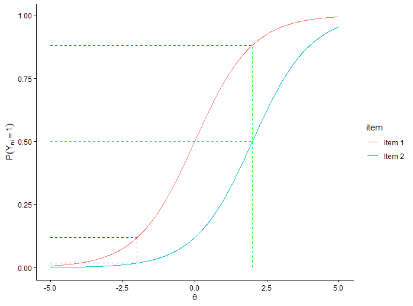
Conversely, we see that regardless of whether we consider the green person (\theta = 2) or the pink person (\theta = -2), both individuals have lower response probabilities on the more difficult Item 2 than on Item 1. This is evident from the fact that the red horizontal dashed line for Item 1 for each person always lies above the blue horizontal dashed line for Item 2.
ImportantBe careful
The property of a specific objectivity holds only as long as the assumptions of the Rasch model hold. Specific objectivity does not apply to other IRT models.
However, as soon as the ICCs are no longer parallel, specific objectivity no longer applies, since it may then be the case, for example, that a person with a lower \theta has a higher probability of answering an item with a 1 than a person with a higher \theta, while the opposite is true for another item as can be seen in Figure 6 . Here, the pink person (\theta = -2) is more likely to answer Item 2 with a 1 than Item 1. For the blue person (\theta = 2), it is exactly the opposite. So, here, for example, the probability of answering an item with a 1 is not always lower for a more difficult item (Item 2), as the pink person demonstrates.
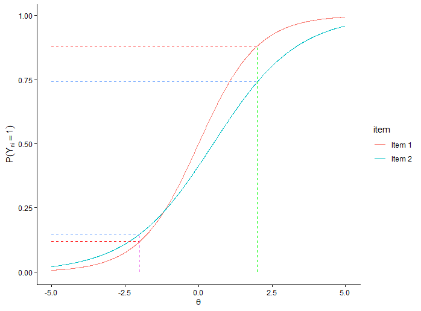
TipMathematical background
It can also be shown mathematically that specific objectivity holds under the Rasch model, as demonstrated, for example, in Debelak et al. (2022, 30) and below.
To illustrate this, let’s imagine we want to compare two people, n and n^\prime. To do this, we can look at the difference in the probability that each person answers 1 to the item. To calculate the probability that a person will answer the item with a 1, we can use the formula from the Rasch model:
P(Y_{ni} = 1) - P(Y_{n^\prime i} = 1) = \frac{\exp(\theta_n - \beta_i)}{1 + \exp(\theta_n - \beta_i)} - \frac{\exp(\theta_{n^\prime} - \beta_i)}{1 + \exp(\theta_{n^\prime} - \beta_i)}
However, if instead of calculating the probability that a person will answer the item with 1, we now want to calculate the log odds, then we can rewrite the formula for the Rasch model. We have learned that we can also think of the Rasch model as a generalized linear model. Therefore, if we apply the inverse of our link function to our dependent variable (the probability of answering an item with a 1), we obtain only the linear term (\theta_n - \beta_i) on the predictor side of the equation, and the dependent variable is transformed into the log odds.:
\log\left(\frac{P(Y_{ni} = 1)}{1 - P(Y_{ni} = 1)}\right) = \theta_n - \beta_i
If we now rewrite the comparison of the persons accordingly, we get:
\begin{align} \log\left(\frac{P(Y_{ni} = 1)}{1 - P(Y_{ni} = 1)}\right) - \log\left(\frac{P(Y_{n^\prime i} = 1)}{1 - P(Y_{n^\prime i} = 1)}\right) &= (\theta_n - \beta_i) - (\theta_{n^\prime} - \beta_i)\\ &= \theta_n - \beta_i - \theta_{n^\prime} + \beta_i\\ &= \theta_n - \theta_{n^\prime} + \beta_i - \beta_i\\ &= \theta_n - \theta_{n^\prime} \end{align}
As you can see, in the end, only the comparison of \theta remains, and the item parameters cancel out. This means that when comparing two individuals, n and n^\prime, it does not matter on which items the two individuals are compared. This corresponds to the definition of specific objectivity.
The same can be shown for the comparison of two items, i and i^\prime:
\begin{align} \log\left(\frac{P(Y_{ni} = 1)}{1 - P(Y_{ni} = 1)}\right) - \log\left(\frac{P(Y_{ni^\prime} = 1)}{1 - P(Y_{ni^\prime} = 1)}\right) &= (\theta_n - \beta_i) - (\theta_{n} - \beta_{i^\prime})\\ &= \theta_n - \beta_i - \theta_n + \beta_{i^\prime}\\ &= \theta_n - \theta_n + \beta_{i^\prime} - \beta_i\\ &= \beta_{i^\prime} - \beta_i \end{align}
Here, too, we see that when comparing items, the person-specific parameters cancel each other out. Therefore, when comparing two items, i and i^\prime, it does not matter which individuals answered the two items. This, too, is consistent with the definition of specific objectivity.
Ultimately, specific objectivity is related to a form of fairness, since it requires that a comparison is based solely on the the latent construct (\theta) and does not depend on the items used to measure the construct (Debelak et al. 2022, 28). With regard to test development, it is also important that the comparison of different items not depend on who answers them. This, too, ensures a specific level of objectivity.With regard to test development, it is also important that the comparison of different items not depend on who answers them. This, too, ensures a specific level of objectivity (see Rasch 1961, 332; Wilson 2023, 248).
- These properties are based on some assumptions which can be tested to check if the Rasch model holds
Identifiability
Although the exact estimation procedures for fitting a Rasch model to the data are not covered in detail in this tutorial, it is important to note at this point that the Rasch model has an identifiability problem. This is due, on the one hand, to the fact that the scale on which we locate \theta and \beta is a latent scale, since we are, after all, modeling latent constructs. Since latent constructs are abstract and cannot be directly observed, they do not have a natural unit or metric. And second, it is solely the difference/distance between \theta_n and \beta_i that determines the probability that the item will be answered with a 1. However, this also means that, in theory, there are an infinite number of \theta and \beta combinations that can produce the same response probability. For example, the probability that a person will answer an item with a 1 is the same for a person with \theta = 4 and \beta = 2 (\theta - \beta = 4 - 2 = 2) as for a person with \theta = 6 and \beta = 4 (\theta - \beta = 6 - 4 = 2) or for any other \theta and \beta combination, which produces a difference of two. If the Rasch model now attempts to estimate \theta and \beta based on the data, the model cannot find a unique solution, since there are theoretically an infinite number of combinations that are equally likely for the data. This is also referred to as the identifiability problem; in other words, the model is said to be unidentifiable (see also De Ayala 2022, 44).
To solve this problem, we must ensure that our latent continuum has a unique origin and metric. The unit of measurement in the Rasch model is set to 1, so we only need to specify the origin of the metric (De Ayala 2022, p. 44). There are various ways to do this, known as restrictions (since the possible solutions for the model are restricted in order to ensure a unique solution).
sum norm restriction (item centering): The idea here is that we give the model an additional “rule”: it should estimate the item difficulties \beta such that the sum of the item difficulties equals 0 (\sum_{i = 1}^I \beta_i = 0). Simply put: Because the model now not only seeks the parameters most likely to predict the data but must also satisfy the new rule, there are no longer an infinite number of possible solutions, and the model becomes identifiable.
fix the difficulty of one item (anchor item): The idea here is that we set the item difficulty \beta_i of a given item to a specific value (usually \beta_i = 0). The logic here is that the items differ in their \beta relative to one another. By fixing a \beta_i (also known as “setting it”) and requiring the remaining items to maintain a certain distance from that item in order to reflect the relative distances, we obtain unique solutions. To put it simply, you can think of it this way: We know that Item 2 is two units more difficult than Item 1, and Item 3 is one unit easier than Item 1. Without any restrictions, there would now be an infinite number of possible \beta values for these items, e.g., \beta_1 = 2, \beta_2 = 4, and \beta_3 = 1, or \beta_1 = 10, \beta_2 = 12, and \beta_3 = 9. However, if we now introduce a restriction and define that \beta_1 = 0 (fixing it), then there is only one solution for the other \beta values that correctly represents the relative distances between the items, namely \beta_2 = 2 and \beta_3 = -1.
set expected value of person trait to 0 (person centering): This is a similar idea to the sum norm restriction. We tell the model to estimate the \theta values so that they predict the data as well as possible, but also so that the mean of the estimated \theta values is 0.
Since the person parameters (\theta) and item parameters (\beta) lie on the same latent scale, it is sufficient to apply one of the restrictions mentioned to specify the origin of the metric (De Ayala 2022, 44).
Information
Item information
A key concept in IRT that is very helpful for test development—and one that does not exist in this form in CTT—is item information. One can think of information as a measure of measurement accuracy or precision. One can understand this quite intuitively if one take a closer look at the ICC of an item.
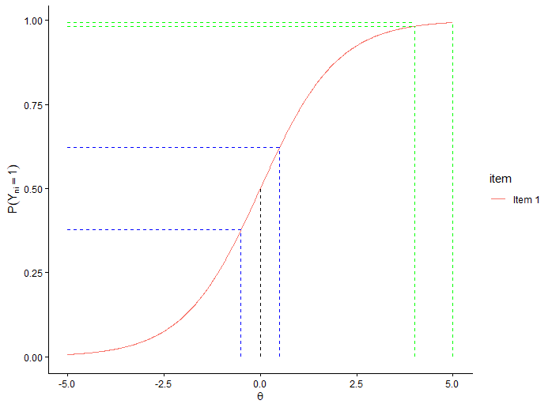
The ICC plots the different \theta values on the x-axis and the probability to respond to the item with a 1 on the y-axis. We can see that the Function follows a S-shaped curve. Therefore, the slope of the function is not constant—as it is, for example, in a linear function—but varies depending on the point on the x-axis. Consequently, we can see that the change in the probability to respond to the item with a 1 (y-axsis) is different depending on the \theta-area on the continuum.
For example for persons with very high \theta-values (or very low) the probability doesn’t really change if the \theta increases or decreases. We can see this in Figure 7. The two green persons have rather high \theta values (\theta_{\text{green1}} = 4 and \theta_{\text{green2}} = 5). Although person green2 has a \theta value that is one unit larger, we can see on the y-axis that the probability that the individuals will answer 1 to the item barely differs (P(Y_{\text{green1}i} =1) = 0.98 and P(Y_{\text{green2}i} = 1) = 0.99). This is because, in the low and high \theta ranges, the slope of the item function/ICC is quite flat. This means that changes along the x-axis are hardly reflected in changes along the y-axis.
The situation is different when we consider the \theta range around the item difficulty (here, \theta_i = 0). Here, we see that the slope of the ICC is quite steep compared to the extremes. Let’s take a look at the two blue persons (\theta_{\text{blue1}} = -0.5 and \theta_{\text{blue2}} = 0.5) in Figure 7 . These two people differ by exactly one \theta unit, just like the two green people. However, we see here that this \theta difference between the blue people makes a big difference in the probability that the person will answer the item with a 1. Person “blue” has a 38% probability of answering the item with a 1, while person “blue2” has a 62% probability. Put simply, one could say that person ‘blue2’ is unlikely to agree with the item, while person “blue” is likely to agree with it.
So we see that the steeper the slope, the more differences in \theta also make a difference in the response probability. That’s why we can also say that the steeper the slope, the better we can distinguish or differentiate between individuals, even if they have very similar \theta values. We therefore “learn” the most about the \theta values of individuals in those ranges of the \theta continuum (x-axis) where the slope of the ICC is steep. In other words, these ranges contain the most information. Therefore item information shows us which areas of the \theta continuum an item can capture especially well (in the sense of where it can differentiate between persons with \theta values close to each other).
With this intuitive and visual introduction to the concept of information, it should now be clear that item information is related to the slope of the ICC. The ICC reaches its steepest slope at the inflection point; accordingly, most of an item’s information is concentrated around the item difficulty, since we have learned that the item difficulty (\beta) marks the inflection point of the ICC.
TipMathematical background
Mathematically the Iteminformation for a certain \theta value I_i(\theta) for the Rasch model can be calculated by the probability to solve the item p(X_i = 1) times the probability to not solve the item p(X_i = 0) (Debelak et al. 2022, 51; Fischer and Molenaar 1995, 55):
\begin{align} I_i(\theta) = p(X_i = 1|\theta_n,\beta_i) \cdot p(X_i = 0| \theta_n,\beta_i) = \frac{exp(\theta - \beta_i)}{1 + exp(\theta - \beta_i)} \cdot \frac{1}{1 + exp(\theta - \beta_i)} \end{align} \tag{7}
If we theoretically calculate for every possible \theta value the Information I_i(\theta) (see Equation 7) and plotting the \thetas on the x-axis and the Iteminformation on the y-axis, then we get the Item-Information curve (see Figure 7 for an example) .
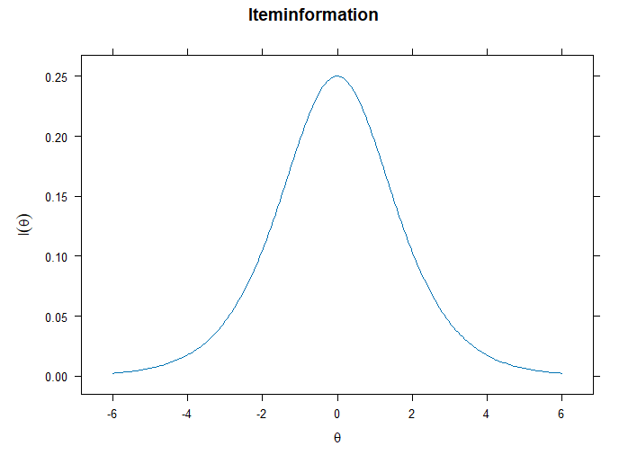
This is quite usefull because we can visually see where on the \theta continuum the item is especially informative or which part on the \theta continuum the item measures especially precise. Since we have already determined that the item information is greatest at the point of item difficulty (because that is where the ICC slope is steepest) and we know that the probability of a correct response at the point of item difficulty is 50% (because that is how item difficulty is defined), we can say that the maximum possible information in the Rasch Model is 0.25 (because I_i(\theta = \beta_i) = 0.5 \cdot 0.5 = 0.25) and lies at the point of item difficulty. Therefore, the peak of the item information curve always corresponds to the item’s difficulty level
The concept of item information as a measure of the (in)accuracy with which an item measures differs from CTT, and this is one advantage of IRT over CTT. This is, because in the CTT we have reliability as a measure of precision. However in CTT the reliability of an item is the same across the whole \theta continuum. This implies that an item can measure at every \theta level equally well. However this is rather unrealistic: for example consider an easy math item. This item is challenging for persons with low math ability and not everyone will solve it, so we can differentiate between people at the lower end of the math ability continuum. However the same item is easy for persons with a high math ability. So every person with high math ability will solve this item. However if we compare only people who are good in math an easy item doesn’t differentiate between those people because every person can solve the item. However, the CTT’s reliability concept would suggest that a simple math item measures people with high math ability just as well as it does for people with low math ability. In IRT, this is viewed more realistically based on item information, since each item can only accurately measure certain areas of a construct. Put differently, in IRT the reliability varies over \theta (Hoffman 2024).
Hab hier das Mathe-Beispiel beibehalten, weil ich es intuitiver finde als das mit environmetal concerns zu erklären
Test information
Most of the time we don’t have a single item but a whole scale consisting of multiple items. Since we learned that the item information is the largest around the item difficulty and the difficulty may vary from item to item, we could ask our self how the scale as a whole can differentiate between persons across the whole \theta continuum. One metric that reflects this is the test information.
Since each item contributes some information, we can calculate the total test information by summing up the item information of all items (De Ayala 2022, 31). Formally, this can be expressed as follows:
I(\theta) = \sum_{i=0}^I I_i(\theta) \tag{8}
If we calculate the test information for every possible \theta value with Equation 7 and plotting the \theta on the x-axis and the test information on the y-axis, then we get the Test-Information curve (see Figure 9 for an example) .
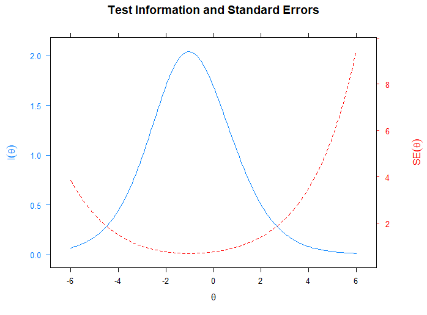
Information is a measure of precision, and accordingly, it is also related to measures of imprecision. Therefore, the test information is also related to the standard error. Formally, this can be expressed as follows (Hoffman 2024; Meiser 2025; De Ayala 2022, 31):
\text{SE}(\theta) = \frac{1}{\sqrt{I(\theta)}} = \frac{1}{\sqrt{\sum_{i=0}^I I_i(\theta)}}
This also makes intuitive sense, as we can see in the example Figure 9 : At the \theta areas where we measure very precisely (a lot of test information), we logically measure with less uncertainty (smaller standard error), and vice versa.
The Test information again demonstrates an interesting difference to CTT: In CTT, reliability always depends on the exact composition of the scale. The contribution of an item to reliability/validity always depends on which other items it is measured alongside (Lord 1980, 22). In IRT on the other side, the information contribution of an item is independent of the other items included in the scale. Despite these differences between CTT and IRT, the test information can also be converted into a reliability metric (Hoffman 2024, 41):
\text{Reliability} = \frac{I(\theta)}{I(\theta) + 1}
For a more formal derivation of the reliability formula see (Lord 1980, 52). However, it is important to note that this reliability measure is again \theta-specific, since the test information is \theta-specific. To obtain a measure of overall model-based reliability, one could sum the reliabilities for each possible \theta value and weight them by the number of individuals at that \theta level (Hoffman 2024). Hoffman (2024), however, questions the value of such an approach, since it negates the very advantage that an IRT-based perspective provides (see also Lord 1980).
Practical use of information
Item and test information can be very useful and insightful for diagnosticians and in scale development, as it allows us to assess at a glance how well—and in which areas—our items or scale are able to estimate the latent construct \theta (see also De Ayala 2022 for an illustration of this point). We can understand this by looking at the fictional example shown in the Figure 10 . Here we have a scale consisting of 5 items, for which we know the item difficulties: \beta_1 = 0, \beta_2 = 1, \beta_3 = 3.5, \beta_4 = -1.5 and \beta_5 = -3.5. This allows us to determine and plot the item information and test information for all possible values of \theta. As we’ve learned, an item can best differentiate between individuals within the area around its item difficulty, and therefore most of the information about that item is also found within that same area. We can see this clearly in the figure. Take, for example, item 5, which can be described as an easy item because it has a very low \beta. Accordingly, we can see in the pink item information curve for this item that the peak of the curve (i.e., the most information) occurs at the item difficulty \beta_5 = -3.5 and then decreases toward the sides. We can now clearly see that Item 5 is well-suited for assessing individuals with a low \theta around -3.5, but that this item provides us with hardly any information about individuals with high \theta values. For example, the item information for Item 5 is effectively 0 for a person with \theta_n = 2.5. In other words, Item 5 contributes nothing to our knowledge about a person with \theta_n = 2.5.
For Item 3, the exact opposite is true. This item is a difficult item (\beta_3 = 3.5) and is therefore particularly effective at distinguishing between high \theta scores. So if we want to measure individuals with high \theta scores, Item 3 is the better choice than Item 5. However, this comes at the cost of Item 3 not being suitable for measuring individuals with low \theta scores, as we can see from the very flat item information curve in low \theta areas.
Fortunately, we usually don’t measure a latent construct using just a single item, but rather use a scale based on multiple items. Fortunately, we usually do not measure a latent construct using just a single item, but rather use a scale based on multiple items. Therefore, we do not need to find a single item that can measure all \theta ranges simultaneously with a high level of information (which is an unrealistic assumption). Instead, we can consider the purpose for which we want to develop our measurement instrument. For example, suppose we want to develop a measurement instrument that can be used for the general population. For many constructs, it is assumed that they are normally distributed within the population. This means that most individuals tend to have average scores on the construct (medium \theta scores), but there are also some individuals with scores well above and well below average (low and high \theta scores). Therefore, our instrument must be capable of covering a broad \theta continuum. The five items on our scale would serve as a good measurement tool for this purpose, since we can see in the plot that the item information curves actually cover the entire relevant \theta scale (from -5 to 5), as the scale contains items with very different \beta values. The black test information curve also summarizes this well. Here we see that, overall, the scale has the most information around \theta = 0 and that the information decreases toward the sides. Thus, the shape of the test information curve also resembles the distribution we assume in our population (normal distribution). Of course, it should be noted here that this is an ideal example based on simulated data.
Therefore let’s consider another scenario. Let’s imagine we want to develop a measurement tool designed exclusively for people with high \theta values. This could be, for example, an intelligence test specifically for highly gifted individuals. For such a scenario, the fictitious scale from our example is not optimal. For example, items 5, 4, and 1 contribute very little to the estimation of \theta in our target continuum range. In fact, only item 3 differentiates particularly well in high \theta areas. The test information curve also drops quite steeply starting at \theta = 2.5. So we would actually need additional items with high item difficulty (high \beta) to obtain more information in the high \theta ranges. In return, we could eliminate items that provide information for \theta ranges that do not actually interest us (such as items 5, 4, and 1). Therefore, as Hoffman (2024) notes, there is no universally “ideal” test information curve, since the optimal test information curve always depends on the purpose for which the measuring instrument was designed.
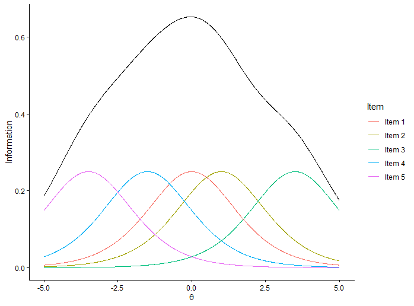
These examples should highlight the advantage of IRT over CTT. Because the item and respondent parameters are located on the same latent scale and we can determine the information from an item differentiated according to the \theta values, we get a much more nuanced picture of our measurement tool and for whom it works particularly well. From a scale development perspective we can adapt the design of our measurement instrument in a highly individualized and flexible manner to the specific requirements of the measurement situation (De Ayala 2022, 35).
Thus, IRT can be used to:
optimize existing scales: e.g. by “filling” the information gaps by adding new items, which are informative for a specific \theta range. Here, too, the ECo Scale is a good example. In fact, optimizing the measurement was one of the motivations behind the development of the ECo Scale, since analyses of existing measurement instruments for environmental concerns had shown that these provided little information in areas of high environmental concern (Gomm and Quoß 2026, fig. 1 and Figure 2).
create short versions of scales without a substantial loss of information: e.g. we might see in the item information plot that the information curves for two items overlap significantly. Therefore, we can omit one of the items, since the \theta range is already covered.
develop measurement instruments specifically tailored to a particular situation or target population. To this end, Lord also suggests using a target information curve (Lord 1980, 23): To do this, you need an item pool for which you already know the item information curves. You also need to consider the test information curve you want to achieve with your scale (e.g., a curve focused on a specific \theta range or a curve that covers a broad continuum). This desired curve is the target information curve. You can then begin selecting items from the item pool that can fill the area under the target information curve. To do this, after each step, you calculate the test information curve obtained from the selected items and compare it with the target curve. In the next step, you then try to select a new item that brings you even closer to the target curve. For example, if one observes that the current items only cover the low \theta range well, but high \theta values should also be differentiated below the target information curve, then one could add a difficult item (high \beta) in the next step to fill this “gap” relative to the target information curve. This process is repeated iteratively until a scale has been composed that comes as close as possible to the target information curve.
NoteLet’s do it in R
To plot the item information, we can use the functions we’re already familiar with from the ICCs: With itemplot(), we get the information curve for a specific item, while with plot() we can plot the information curves for all items together in a single plot. What’s new here is that we’re selecting a different option in the type argument. Instead of “trace” for the ICC, we’re now selecting ‘info’ (for the itemplot() function) or “infotrace” (for the plot() function) to plot the item information.
# plot item information curve of a specific item
itemplot(eco_rasch,6, type='info')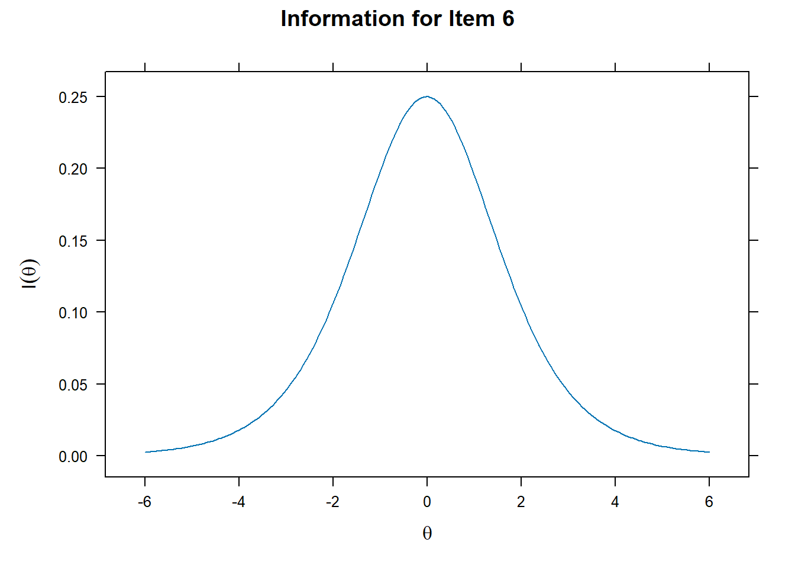
# plot all item information curves in a grid
plot(eco_rasch, type="infotrace", theta_lim=c(-5,5), facet = TRUE)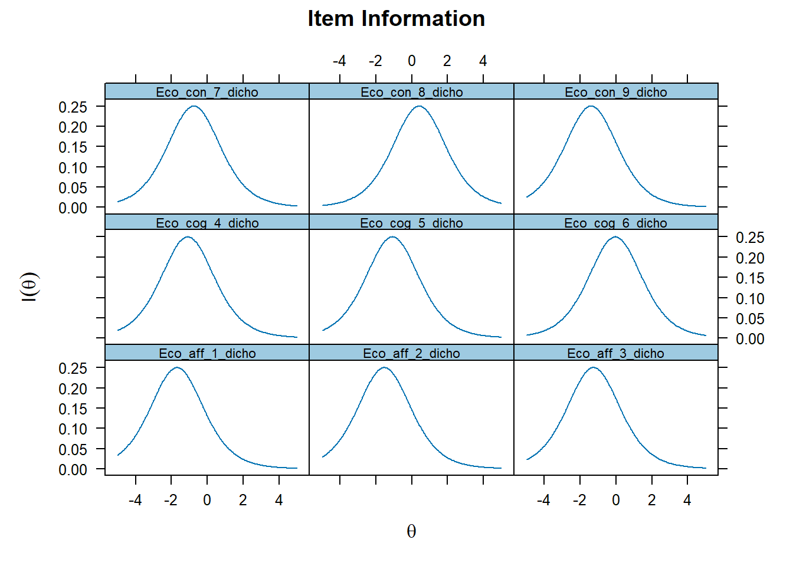
# plot all item information curves in a single plot
plot(eco_rasch, type="infotrace", theta_lim=c(-5,5), facet = FALSE)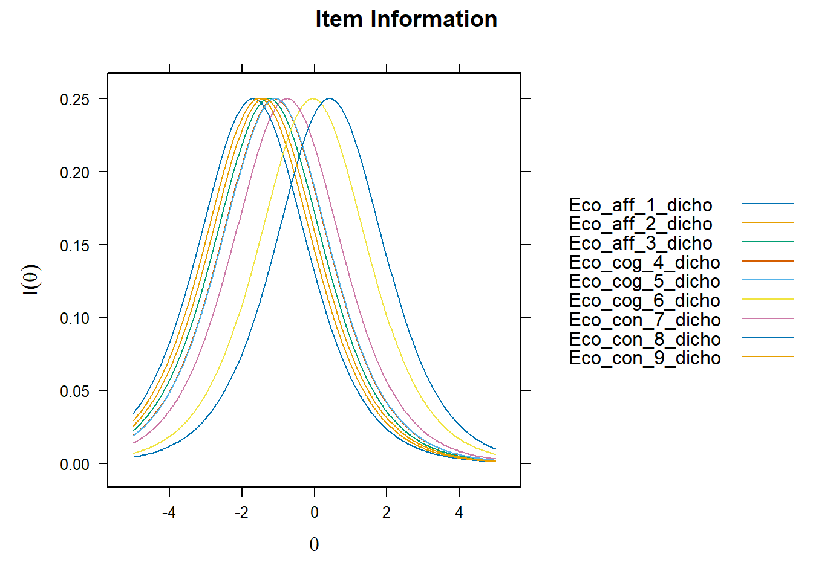
To plot the test data, we can also use the plot() function:
# plot test information curve
plot(eco_rasch, type="info")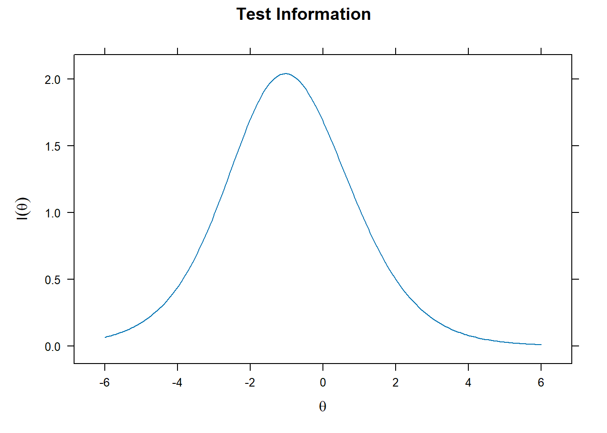
We can also combine different types of information. To do this, we can look at the various options offered by type. For example, we can use “infoSE” to plot both the information curve and the standard error, or use “infotrace” to plot both the information and the ICC.
# plot test information curve with SE
plot(eco_rasch, type="infoSE")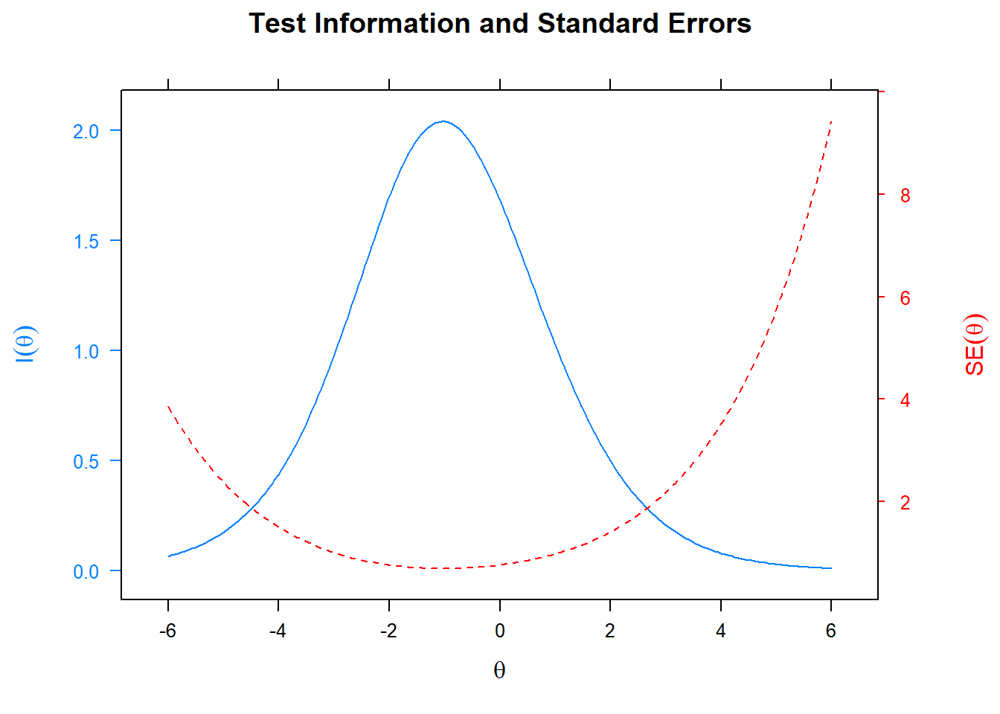
# plot item information curve of a specific item together with ICC
itemplot(eco_rasch,6, type='infotrace')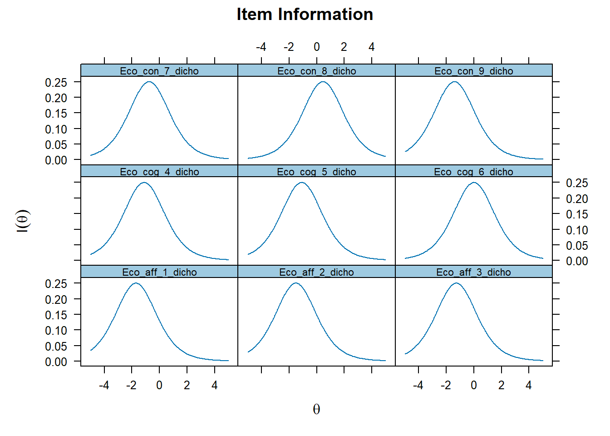
Hoffman (2024) : “Because the loadings/slopes relate nonlinearly to theta, this implies that reliability (now called “test information”) must vary across theta values. So items are not just “good” or “bad”, but are “good” or “bad” for whom?”
Therefore if we just look at the probability to solve the item, we can not really predict the exact \theta value, if the probability is low (high), because multiple different \theta values produce similar low (high) probabilities
One can understand this quite intuitively if one take a closer look at the ICC of an item
An even more intuitive example:
If we have an item with medium item difficulty (e.g., a moderately difficult math question), then when comparing two highly capable individuals, the probability of solving it doesn’t really matter, since both will almost certainly solve the item because they are significantly more capable than the item’s difficulty level. The same applies to people who are bad at math. For them, the item is far too difficult, and they will almost certainly be unable to answer it. Although these individuals have different theta values, there will be no difference in their responses to the item.
Conversely, let’s imagine two people who are moderately good at math. If one person is able to solve the item and the other isn’t, this seems to indicate that the one person is slightly better at math than the other.
In the second case, the item thus reveals differences between individuals, and we can learn something about them. Therefore, the item is more “informative” in this case.
More mathematically formal explanation -> should this be included?< /mark>
Understanding information through the second derivative -> could be more intuitive because it can be displayed visually and linked to the slope-logic
Understanding information through the standard error (s. (De Ayala 2022, 29))
Example with Information curves and interpretation, what we can learn about the scale
- For example s. (De Ayala 2022, 32 ff.)
- see also Hoffman lectures Lecture 5a
Nützlich für Testkonstruktion (s. (Lord 1980, 23))
auch noch auf Zusammenhang mit der Wright Map eingehen
- ähnliche Idee aber hier noch zweite Dimension durch Testinformation
Implementation in R
- compact and all together at the end or combined with the text and devided over the sections?
2PL
Intuitive introduction in a regression/predictor logic
Maybe the assumption, that only the trait and the item difficulty are influencing the response probability are a little bit harsh
Maybe there are other factors/predictors, which are also influencing the response probability
A further predictor could be the ability of an item to “differentiate among individuals located a different points on the continuum” De Ayala (2022) p.137. This is also called discrimination
Since we now have two parameters in our model (item difficulty & discrimination) this is an extention to the Rasch model. which has onls 1 Parameter (1PL). Therefore the new model is called (Birnbaum) two-parameter logistic model (2PL)
Model formula
The formula looks pretty similar to the Rasch-model
New is the \alpha_i-parameter, which represents the discrimination of an item i
As we can see the probability that a person solves item i depends now also from the discrimination parameter (P(x_j = 1| \theta, \alpha_j, \beta_j))
If we ignore the link-function, which is there solely to ensure that our model outputs probabilities. than we can think of the formula as a simple linear regression
If we get rid of the link-functon we have \alpha_j (\theta - \beta_j)
When we expand the term we have \alpha_j \theta - \alpha_j \beta_j
If we now define a new variable called \gamma_j, which is equal to -\alpha_j \beta_j than we can write \alpha_j \theta + \gamma_j
this looks like a linear regression
we can see that the new discrimination paramter \alpha_j functions as the slope-parameter of the regression. Thus the higher the discrimination parameter, the steeper the slope of the regression line
This we can also see visually in the ICCs
- explaining the effect of \alpha_j visually with a plot like Figure 5.1 in De Ayala (2022)
But how can we interpret the alpha parameter in terms of its meaning?
Interpretation of the alpha parameter:
s. also example in (De Ayala 2022, 20)
The alpha parameter indicates how well an item can differentiate between persons. But what does this mean
Imagine a very able person and a very unable person
In terms of parameters this would mean, that one Person has a very high \theta and the other has a very low \theta
because the one Person is much more competent than the other Person the predicted probability that the competent person will solve the item is probably much higher than for the less competent person
Because of this large difference in the probability to solve the items, the model can distinguish these two persons quite well
Now imagine two persons with \theta values close to each other
if we plug in the theta-values of these two persons the model gives them pretty similar probabilities to solve this item
Therefore it’s hard to differentiate between these persons
Now the alpha parameter comes into play
we learned, that the alpha parameter affects the slope of the ICC
if the alpha parameter is increased the slope gets steeper
in this case we can see in the ICC, that the difference on the y-axis (probability to solve the item) is larger although the two persons are still close to each other on the x-axis (their true ability \theta)
Therefore, even though the persons are quite similar the item can still differentiate or discriminate between the persons, if the discrimination parameter is large enough
Tip: “good” values of \alpha range from 0.8 to 2.5 (De Ayala 2022, 137)
However, this was only a simplified and intuitive explanation of the discrimination parameter
If you take a close look at the ICCs, you can see that the slope is not constant across the entire \theta range, since the function is not a straight line
This implies, that an item doesn`t descriminate equaly well across the \theta continuum
- e.g. persons in the high/low end have basicly the same probabilities
An item can discriminate the most around the item difficulty \beta
this can also been seen visually, because the infliction point of the ICC of every item is located at the item difficulty
The infliction point, is the point with the steepest slope (slope at \beta = 0.25 \cdot \alpha)
Since we learned, that an item can discriminate the better the steeper the slope, the item discriminates the most around the item difficulty
The discrimination parameter of the IRT relates to the item-total correlation from the CTT, which is also sometimes called item discrimination (Trennschärfe) (Lord 1980, p33)
\alpha_i \approx \frac{\rho_{ix}}{\sqrt{1-\rho_{ix}^2}} \quad ; \quad \rho_{ix} \approx \frac{\alpha_i}{\sqrt{1-\alpha_i^2}}
- However, this mathematical relationship holds only if \theta is restricted to a standard normal distribution and there is no guessing involved.
Item- and Test-Information
Reference Rasch-Part, where the concept of information is introduced
Since we learned in the first part, that the information is related to the slope of the ICC, the new \alpha parameter of the 2PL also influences the information
If the \alpha parameter is > 1 the slope gets steeper. Therefore, the discriminatory power increases because the item can better separate between persons around the item difficulty
If the \alpha parameter is < 1 the slope gets flatter. Therefore, the discriminatory power decreases because the item has more difficulty distinguishing between people depending on the element’s level of difficulty
This can also be seen by the formular for the Iteminformation
\begin{align} I_i(\theta) &= \alpha_i^2 \cdot p(X_i = 1) \cdot p(X_i = 0)\\ &= \alpha_i^2 \cdot \frac{exp(\alpha_i(\theta - \beta_i))}{1 + exp(\alpha_i(\theta - \beta_i))} \cdot \frac{1}{1 + exp(\alpha_i(\theta - \beta_i))} \end{align}
Also the maximal Iteminformation can contrary to the Rasch-model exceed 0.25 because the maximal item Information is at the item difficulty (where the probability to solve the item is 50%) but then the probability to solve the item times the probability to not solve the item is weighted by \alpha_i^2
if \alpha > 1, then the maximal possible item infromation > 0.25 (contributes more information than Rasch model)
if \alpha < 1, then the maximal possible item infromation < 0.25 (contributes less information than Rasch model)
In summary, the Iteminformation depends on two factors
The distance of the person to the item difficulty (\theta_n - \beta_i)
the discimination parameter \alpha_i (the higher the discrimination. the higher the information around the item difficulty)
As in the Rasch model, the test information is simply the sum of item informations given theta
- I(\theta) = \sum_{i = 1}^II_i(\theta)
TipMathematical background
Mathematically, the test information is based on Fisher’s information (Debelak et al. 2022, 51):
I(\theta_n) = -E\left(\frac{\partial^2 \log P(Y_{ni} = y_{ni}|\theta_n,\beta_i)}{\partial^2\theta_n} \right)
From the \partial^2, we can see that this includes the second derivative of the log-likelihood. Perhaps some of you still remember from school that derivatives can have something to do with the slope of a function, and that makes sense in the context of information, since we’ve already seen in our intuitive introduction that the slope of the ICC influences the information.
Let’s imagine two ICCs with different slopes. If we take the first derivative of both ICCs and plot them, we get an inverted U-shaped distribution. This is because the first derivative corresponds to the slope of the ICC at the corresponding \theta point. Since the ICC rises very gradually at first, the values of the first derivative are also close to the x-axis. Then, the ICC rises sharply around the item difficulty \beta. Here, we therefore have high positive values in the first derivative. Once the item difficulty has been exceeded, the slope of the ICC decreases again, and accordingly, the values of the first derivative approach the x-axis once more. Since the first ICC has a higher discrimination parameter \alpha, it rises more rapidly in the range around the item difficulty than the flatter ICC. In terms of the first derivative values, this means that the curve of the first derivative of the steeper ICC is narrower and has a sharper peak. If we now “zoom in” on the regions around the two peaks of the first derivatives and consider what the second derivative looks like, we see that the second derivative indicates how steeply the curve of the first derivative rises—or, in other words, how steep the acceleration of the slope of our ICC is (how quickly the slope of the ICC changes). For the sharp peak of the first derivative, we see that the second derivative has a significantly steeper negative slope, since the first derivative rises sharply at first and then suddenly drops sharply again (= sharp peak). With a broader peak, we see that the second derivative slopes less steeply. Since we know that steeper ICCs contain more information regarding item difficulty, we can therefore conclude that a more negative second derivative must indicate a more informative item. In summary, this intuitive example is intended to illustrate that the second derivative is related to the slope of our ICC and, therefore, also to the item information.
FALSCH: Umschreiben auf log likelihood NICHT auf ICC sonder auf log-Likelihood beziehen. Geht ja um die Schätzer der PArameter -> viel Information -> klares Signal -> klarer Gipfel der log-Likelihood
Difference to the Rasch-model
ICCs can cross now, because different slopes are possible since \alpha is itemspecific
- violation of the specific objectivity assumption of the Rasch-Model
Model comparison
which model is more appropriate?
-2\Delta\text{LL} Test (inference)
only available for nested models
statistical test statistic: -2\Delta\text{LL} = -2(\text{LL}_\text{fewer} - \text{LL}_\text{more})
degrees of freedom: \Delta\text{df} = \text{df}_\text{more} - \text{df}_\text{less}
- Specifies the number of free parameters that were saved
Then compare the statistical test statistic with the critical values of the \chi^2 distribution for the corresponding number of degrees of freedom (\Delta\text{df}).
AIC & BIC (descriptive)
can also be used, when models are not nested
AIC and BIC are additionally accounting for parsimony
Therefore, the model that offers the best balance between fit and parsimony is preferred
smaller values are better
Additional ressources
- give some usefull links for further information at the end
- How to run IRT analyses in R by Philipp Mansur -> is doing somthing similar as we are aiming for
- Choi & Asilkalkan (2019). R packages for item response theory analysis: Descriptions and features. https://doi.org/10.1080/15366367.2019.1586404
- PSQF Lecture from Lesa Hoffman: Week 7 and 8
Review
Boeck, Paul De, Marjan Bakker, Robert Zwitser, et al. 2011. “The Estimation of Item Response Models with the Lmer Function from the Lme4 Package in r.” Journal of Statistical Software 39 (12). https://doi.org/10.18637/jss.v039.i12.
Chalmers, R. Philip. 2012. “Mirt: A Multidimensional Item Response Theory Package for the r Environment.” Journal of Statistical Software 48 (6): 129. https://doi.org/10.18637/jss.v048.i06.
Christensen, Karl Bang, Guido Makransky, and Mike Horton. 2017. “Critical Values for Yen’s Q3 : Identification of Local Dependence in the Rasch Model Using Residual Correlations.” Applied Psychological Measurement 41 (3): 178–94. https://doi.org/10.1177/0146621616677520.
De Ayala, Rafael J. 2022. The theory and practice of item response theory. Second edition. Methodology in the social sciences. The Guilford Press.
Debelak, Rudolf, Carolin Strobl, and Matthew D. Zeigenfuse. 2022. An Introduction to the Rasch Model with Examples in r. First edition. Chapman & Hall/CRC Statistics in the Social & Behavioral Sciences. CRC Press.
Fischer, Gerhard H., and Ivo W. Molenaar, eds. 1995. Rasch Models: Foundations, Recent Developments, and Applications. Springer New York. https://doi.org/10.1007/978-1-4612-4230-7.
Gomm, Sarah, and Franziska Quoß. 2026. “How to Measure Environmental Concern: An IRT Evaluation and Advancement of Established Survey Scales.” Environmental Politics, August 26, 1–26. https://doi.org/10.1080/09644016.2026.2718610.
Hoffman, Lisa. 2024. [Lecture Notes on Factor Analysis and Structural Equation Models. https://www.lesahoffman.com/PSQF6249/index.html.
Lord, F. M. 1980. Applications of item response theory to practical testing problems. Taylor; Francis.
Meiser, Thorsten. 2025. BB2: Neue Entwicklungen Der Testtheorie Und Testkonstruktion. (Mannheim).
Nason, Kelsey, and Christine DeMars. 2025. “Another Look at Yen’s Q3: Is .2 an Appropriate Cut-Off?” Journal of Educational Measurement 62 (2): 345–59. https://doi.org/10.1111/jedm.12432.
Rasch, G. 1961. “On General Laws and the Meaning of Measurement in Psychology.” Proceedings of the Fourth Berkeley Symposium on Mathematical Statistics and Probability 4: 321–33.
Rijmen, Frank, Francis Tuerlinckx, Paul De Boeck, and Peter Kuppens. 2003. “A Nonlinear Mixed Model Framework for Item Response Theory.” Psychological Methods 8 (2): 185–205. https://doi.org/10.1037/1082-989X.8.2.185.
Torres Irribarra, David, and Rebecca Freund. n.d. WrightMap: IRT Item-Person Map with ’ConQuest’ Integration. https://doi.org/10.32614/CRAN.package.WrightMap.
Wickham, Hadley, Romain François, Lionel Henry, Kirill Müller, and Davis Vaughan. 2026. Dplyr: A Grammar of Data Manipulation. https://doi.org/10.32614/CRAN.package.dplyr.
Wilson, Mark. 2023. Constructing Measures: An Item Response Modeling Approach. 2nd ed. Routledge. https://doi.org/10.4324/9781003286929.
Yen, Wendy M. 1984. “Effects of Local Item Dependence on the Fit and Equating Performance of the Three-Parameter Logistic Model.” Applied Psychological Measurement 8 (2): 125–45. https://doi.org/10.1177/014662168400800201.
Yen, Wendy M. 1993. “Scaling Performance Assessments: Strategies for Managing Local Item Dependence.” Journal of Educational Measurement 30 (3): 187–213. https://doi.org/10.1111/j.1745-3984.1993.tb00423.x.
Reuse
Citation
BibTeX citation:
@misc{koc2026,
author = {Koc, Piotr and Martinez, Leon},
publisher = {GESIS – Leibniz Institute for the Social Sciences},
title = {A {Practical} {Introduction} to {Item} {Response} {Theory}},
date = {2026-07-28},
url = {https://zis.gesis.org/infotexte/GuidelineMaterials.html},
langid = {en}
}
For attribution, please cite this work as:
Koc, Piotr, and Leon Martinez. 2026. “A Practical Introduction to
Item Response Theory .” In R-Tutorials in Psychometrics.
GESIS – Leibniz Institute for the Social Sciences, July 28. https://zis.gesis.org/infotexte/GuidelineMaterials.html.